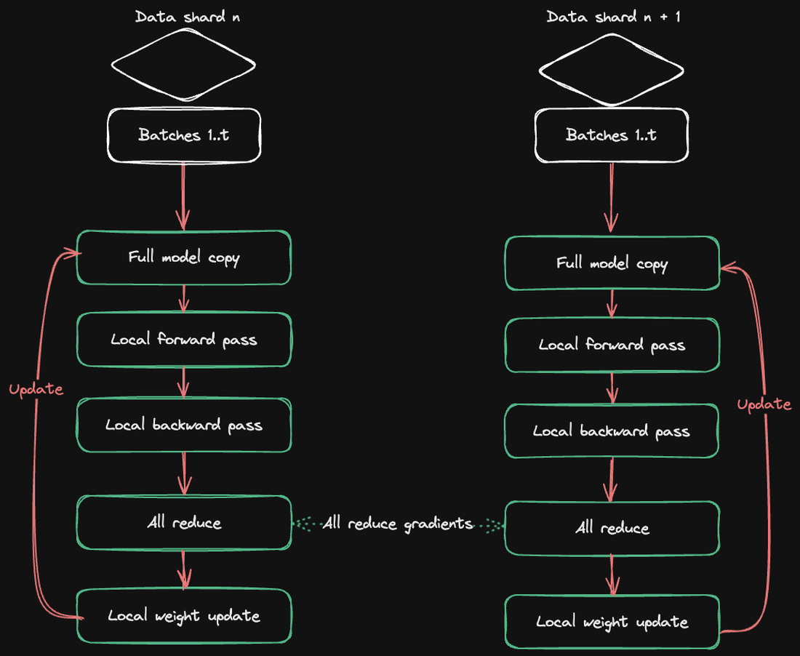
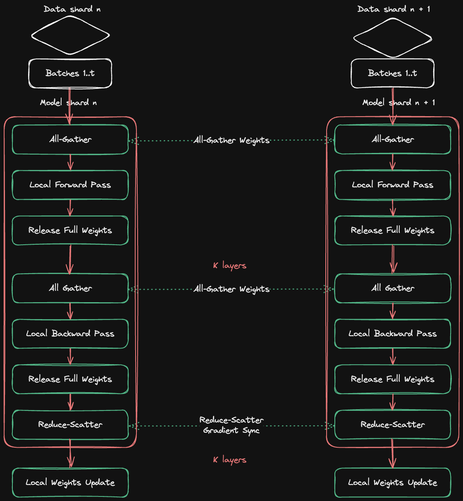
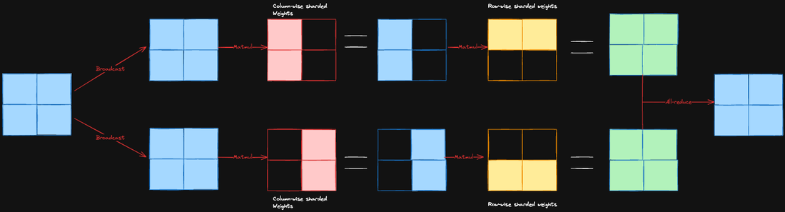
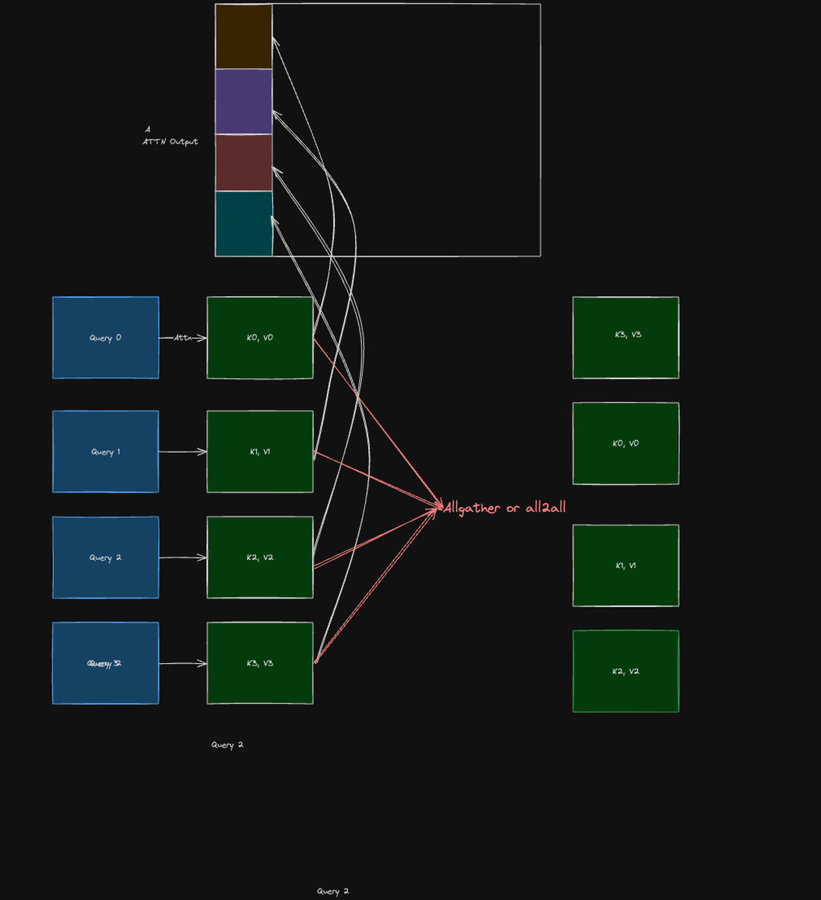
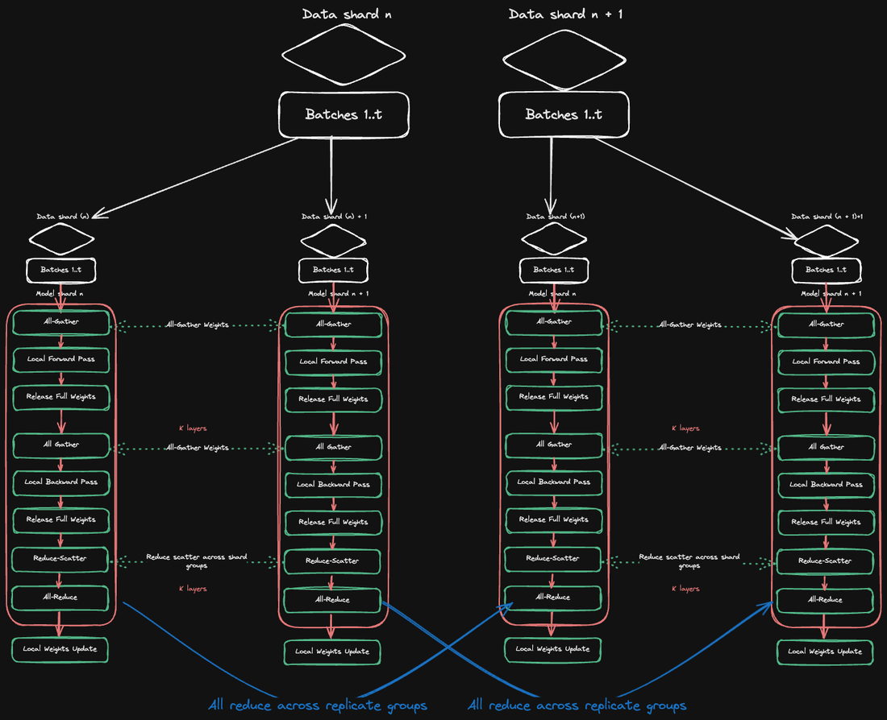

跨多GPU训练大模型因不同并行策略的复杂性而有挑战。在Accelerate中，与Axolotl合作，我们集成了在训练脚本中使用任意并行策略组合的快捷方式！
以下是如何加入训练脚本：
以下代码演示如何在Accelerate中配置并行策略组合：
from transformersimportAutoModelForCausalLM
from accelerateimportAccelerator
from accelerate.parallelism_configimportParallelismConfig
from accelerate.utilsimportFullyShardedDataParallelPlugin
# configure your desired parallelisms here - this particular configuration requires at least 2 nodes with 8 GPUs each.
# setting any parallelism degree to 1 disables it i.e. dp_replicate_size=1 disables DP.
pc=ParallelismConfig(
dp_shard_size=2,# Fully Sharded Data Parallel degree
dp_replicate_size=2,# Data Parallel degree
cp_size=2,# Context Parallel degree
tp_size=2,# Tensor Parallel degree
)
fsdp_plugin=FullyShardedDataParallelPlugin(
fsdp_version=2,
auto_wrap_policy="transformer_based_wrap",
transformer_cls_names_to_wrap=["LlamaDecoderLayer"],
state_dict_type="SHARDED_STATE_DICT",
)
accelerator=Accelerator(
parallelism_config=pc,
fsdp_plugin=fsdp_plugin
)
model=AutoModelForCausalLM.from_pretrained(
"NousResearch/Hermes-3-Llama-3.1-8B",
device_mesh=accelerator.torch_device_mesh
)
model=accelerator.prepare(model)# note: this requires a minimum world size of 16
axolotltrainexamples/distributed-parallel/llama-3_1-8b-hsdp-tp.yaml# Fully Sharded Data Parallel degree (note: also requires the fsdp_config field)
# see https://docs.axolotl.ai/docs/multi-gpu.html#sec-fsdp for more details
dp_shard_size:2
# Data Parallel degree
dp_replicate_size:2
# Context Parallel Degree
context_parallel_size:2
# Tensor Parallel Degree
tensor_parallel_size:2数据并行（DP）是多GPU训练最常用的技术：跨每设备复制模型、梯度和优化器状态，同时把数据batch均匀分布到GPU之间，更新参数前跨设备同步梯度。相比单设备训练显著提高吞吐，但要求模型能装进单设备。

我们用Accelerate ParallelismConfig的dp_replicate_size参数（或Axolotl配置字段）控制模型副本数。注意DP是*最顶层*并行策略：用dp_replicate_size=2并与其他策略组合时会有2个模型副本、每个也受其他策略影响。例如dp_replicate_size=2且tp_size=2，则有2个模型副本、每个有2个tensor parallel shards。
> 我们用 *shard* 表示单设备上是更大数据分区的数据。
模型大到单设备装不下怎么办？完全分片数据并行（FSDP）把模型权重、梯度、优化器状态跨GPU分片（灵感来自DeepSpeed的ZeRO-3）解决，同时每设备仍收全batch的对应部分。如右图，不是每设备要整个模型副本，而是在前向前只gather单层的权重，之后权重可再分片。

这样用通信开销换内存：前向/后向gather分片参数、reduce-scatter本地梯度。FSDP里可调gather粒度控制权衡。极端情况每层gather/reshard峰内存最低但通信最高；实践中常用一次gather整个transformer decoder block。
还可进一步做内存-计算权衡、把参数和梯度offload到CPU训更大模型，但那可能慢得离谱。我们考虑如何有效利用更多设备训更大模型同时保持高数据吞吐。
用 *node* 指单台机器（最多8 GPU）、GPU间有NVLink等快速节点内通信。多节点训练依赖相对慢的节点间通道（如Infiniband）。process pool设备总数称world size：8 GPU单节点world size 8、4节点32。
多节点FSDP时把跨节点整个设备集当作单节点训练。例如4节点×8 GPU在32设备上分片，用inter-and-intra-node通信后端做all-reduce/reduce-scatter。FSDP单独可扩展到大量GPU配大global batch提数据吞吐。但某点后出现需与其他技术组合的挑战。我们通常避免FSDP超过整节点：通信开销太高，在Hybrid Sharded Data Parallelism一节讲怎么解决。
> 用Accelerate ParallelismConfig的dp_shard_size参数 + prepared FullyShardedDataParallelPlugin，或Axolotl的dp_shard_size字段设FSDP度。
Tensor Parallel（TP）是一种模型并行：模型分片永久住在独立设备上，与数据并行相反，每设备收相同batch。TP把线性层计算分布到设备，每设备只算矩阵乘法的一部分。大线性层（如transformer的feed-forward层）效果最好，也可用于attention的Q/K/V/O projections几乎无额外通信。

最佳性能需特定方式分布连续层参数、最小化所需通信。处理线性层对时，第一层列式切分、后续层行式切分，只用一个all-reduce合并分片输出。
与FSDP的动态分片不同，TP创建静态内存分区、内存降随TP group大小恒定缩放。这对超大模型关键：甚至单个decoder层在FSDP all-gather期间装不进内存（回忆FSDP常规是整decoder层一次gather）。但FSDP跨节点相对线性扩展（到约512 GPU），TP只在单节点边界内有效：TP计算中需频繁设备间激活同步，每设备只算部分输出、继续前向前需其他设备输出通信。多节点用TP需与其他技术组合、TP只在单节点内。因大通信开销，TP不推荐PCIe链接GPU。
> Accelerate里TP size用ParallelismConfig的tp_size配置，Axolotl用tensor_parallel_size字段。
最近LLM推理能力让序列长度暴涨：模型用越来越多token解复杂任务。微调实现这行为需训练超长序列（可达百万token）。

Transformer attention随上下文长度平方缩放，单GPU不可能。例如微调Mistral-7B（32 attention heads）序列长128k，单attention矩阵128k×128k×2 bytes×32 heads = 约32GB×32 = 约1TB激活内存！这例子用FlashAttention等优化实现不现实，但展示上下文长度增长的内存需求。
Context parallelism（CP）沿序列维分片输入，每设备只处理全上下文的chunk、算完整巨大attention矩阵的小部分。回忆attention计算：Attention(Q,K,V) = softmax(QK^T)V，Q/K/V分别是query/key/value矩阵。Q的每个query向量（row或输入embedding）必须对K的*每个* key向量算attention score才能正确softmax归一化；这些score再与V的*所有* value向量加权。
关键细节：Q每行可独立算attention score，但每个query向量仍需完整K和V矩阵。给定输入序列长n，Attention(Q,K,V)_i = softmax(Q_i K^T)V，∀i∈{1,2,...,n}。
跨设备分片输入时，从这些输入分片算出的Q/K/V矩阵也沿序列维自动分片：每GPU只算其序列部分的queries/keys/values。例如world size W、序列长n：GPU 0算Q_{1:n/W}、K_{1:n/W}、V_{1:n/W}；GPU 1算Q_{n/W+1:2n/W} 等。
怎么保证attention算对？每设备只需自己Q分片、但需完整K/V矩阵。用RingAttention：1) 初始每GPU持自己Q/K/V分片；2) 每GPU为自己Q_i分片和本地K_j/V_j分片算部分attention矩阵A_{i,j}；3) 每GPU把K/V分片发给环上下一GPU；4) 从上一GPU收不同K/V分片；5) 用收到的K/V分片算额外部分矩阵A_{i,j+1} 等；6) 重复直到收到所有K/V分片、算完全部部分矩阵。
Accelerate用accelerator.maybe_context_parallel装饰器启用（也展示在示例脚本）。
> 类似TP，Accelerate里CP size用cp_size配置，Axolotl用context_parallel_size字段。
多节点设置里FSDP等数据并行把整个网络拓扑当作单维存在。你会因多种原因觉得受限：
扩展到更多节点时FSDP的collective操作被节点间延迟瓶颈，训练慢得不可行；巨大模型的decoder层可能装不进GPU内存、甚至分片状态也太大无法前向；可能无法达成理想batch size：要么太大纯数据并行处理低效，要么因模型大小内存约束太小。
为解决这些问题，把多节点集群视为二维拓扑：一个轴是设备间快速节点内通信、另一轴是相对慢的节点间通信。考虑如何组合已介绍的并行技术利用它。
Hybrid Sharded Data Parallelism（HSDP）是2D并行：节点内FSDP、节点间DP：模型跨每节点复制、节点内FSDP分片。这让FSDP较大的通信开销利用更快节点内链路，DP把较慢节点间通信开销减到单次梯度同步。若面对问题1（跨节点FSDP慢）想加速训练可考虑，代价是内存增加。

重要：可自由配置2D网络拓扑形状，不受限于维度与物理节点边界对齐：可在2个节点上做FSDP同时按2节点组复制，内存更低但吞吐更慢，仍把节点内FSDP通信开销减半。这是建议按硬件和微调需求调的旋钮。
> 在Accelerate ParallelismConfig或Axolotl同时定义dp_shard_size和dp_replicate_size启用HSDP。
FSDP + TP。TP应在节点内用高带宽节点内通信，所以组合TP和FSDP是跨节点用FSDP分片模型、节点内用TP。一定程度上漂亮解决上面三个问题：FSDP的延迟成本降8倍、单设备装不下的大层均匀分布到设备、每TP group收相同batch故global batch也可降8倍。但若仍不够，无法跨节点增TP size，须考虑替代。
FSDP + CP。这是组合FSDP和CP的2D并行，虽不常用（CP已与FSDP组合），某些情况有用：需要大序列长、因而大cp_size时。若仍装不进内存预算，可之上叠加FSDP进一步降内存。
HSDP + TP。world size足够大时（注意3D并行最小world size 8，更大规模最有效），可组合HSDP与TP建层级：DP先跨节点组复制模型、FSDP组内分片、TP节点内切分单层。面对上述全部扩展约束时可考虑：通过内存/吞吐权衡提供最大灵活性适配具体训练设置。
Usage notes。还有未覆盖的组合方式，如HSDP+TP+CP的4D并行，但运作与已覆盖技术非常类似。最鼓励你尝试不同技术和配置：这是获得内存/吞吐权衡直觉的最佳方式。
大模型加载与checkpoint。FSDP处理单设备装不下的模型时，启用CPU RAM高效加载和分片state dict checkpointing至关重要。经FullyShardedDataParallelPlugin的cpu_ram_efficient_loading和state_dict_type参数启用：
fsdp2_plugin=FullyShardedDataParallelPlugin(
fsdp_version=2,
auto_wrap_policy="transformer_based_wrap",
transformer_cls_names_to_wrap=["LlamaDecoderLayer"],
state_dict_type="SHARDED_STATE_DICT",
cpu_ram_efficient_loading=True
)fsdp_version:2
fsdp_config:
auto_wrap_policy:TRANSFORMER_BASED_WRAP
transformer_layer_cls_to_wrap:LlamaDecoderLayer
state_dict_type:SHARDED_STATE_DICT
cpu_ram_efficient_loading:TrueBatch大小。训练总batch size对训练稳定、内存使用、数据吞吐重要。用DP/FSDP时有效batch size：effective_batch_size = micro_batch_size × gradient_accumulation_steps × dp_world_size，其中dp_world_size = (dp_shard_size × dp_replicate_size)/tp_size。
可经增加total micro batch size或gradient accumulation steps、或增加dp_world_size（加GPU）增batch。这强加 *最小* 总batch size = dp_world_size：纯DP/FSDP时即总world size，太高时唯一降总batch的方法是引入tensor parallelism。固定GPU数、内存受限时，建议增加gradient_accumulation_steps而非micro_batch_size达更大有效batch，反之亦然。
学习率缩放。有效batch因数据并行增大时应缩放学习率维持稳定。常用线性缩放scaled_lr = base_lr × (effective_batch_size / base_batch_size) 或平方根缩放scaled_lr = base_lr × sqrt(effective_batch_size / base_batch_size)。
Gradient checkpointing。内存约束即使并行策略也持续时，gradient checkpointing用计算换内存提供额外节省。前向只保留部分激活（通常在transformer block边界）、反向重算中间激活。与上述所有并行策略无缝工作。Accelerate里经FullyShardedDataParallelPlugin设activation_checkpointing=true启用：
注意gradient checkpointing通常训练时间 +20-30%（激活重算），但激活内存 -60-80%，训练超大模型或长序列时特别有价值。
fsdp2_plugin=FullyShardedDataParallelPlugin(
fsdp_version=2,
auto_wrap_policy="transformer_based_wrap",
transformer_cls_names_to_wrap=["LlamaDecoderLayer"],
state_dict_type="SHARDED_STATE_DICT",
cpu_ram_efficient_loading=True,
activation_checkpointing=True
)fsdp_version:2
fsdp_config:
auto_wrap_policy:TRANSFORMER_BASED_WRAP
transformer_layer_cls_to_wrap:LlamaDecoderLayer
state_dict_type:SHARDED_STATE_DICT
cpu_ram_efficient_loading:True
activation_checkpointing:True参考：https://huggingface.co/blog/accelerate-nd-parallel